Introduction to System Identification
SEL5917
Prof. Dr. Marcos Rogério Fernandes
September 1, 2026
Objectives:
The objectives of this class are:
- System Identification problem;
- Parametric Models: ARX, ARMAX, ARIMA, etc;
- Parameters estimation;
- RBF: Radial Basis Functions;
- Neural Networks;
- Model Selection via L1
System Identification
System identification has the goal of building dynamic mathematical models from measured data
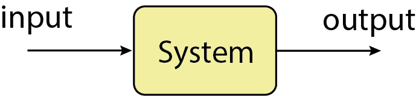
Discrete time!
System Identification
System identification has the goal of building dynamic mathematical models from measured data
Steps:
- Run a Experiment to produces the dataset $$\mathcal{D}^N:=\{(y_1,u_1),(y_2,u_2),\ldots,(y_N,u_N)\}$$
- Define the Model set: $\mathcal{M}:=\{\mathcal{M}(\theta):\theta \in \Theta\}$
- Estimation: find the best $\theta$;
- Validation: accept or reject the model;
System Identification
System Identification
System Identification
System Identification
System Identification
Obs: The shift operator is not the Z-transform! $$q^{-1}\neq z^{-1}$$ The $q$ operator still in the time domain.
General Linear Model
General Linear Model
General Linear Model
AR: Auto-Regressive Model
In this case, we have $$ \frac{B(q^{-1})}{F(q^{-1})}=0,\quad \frac{C(q^{-1})}{D(q^{-1})}=1 $$
AR: Auto-Regressive Model
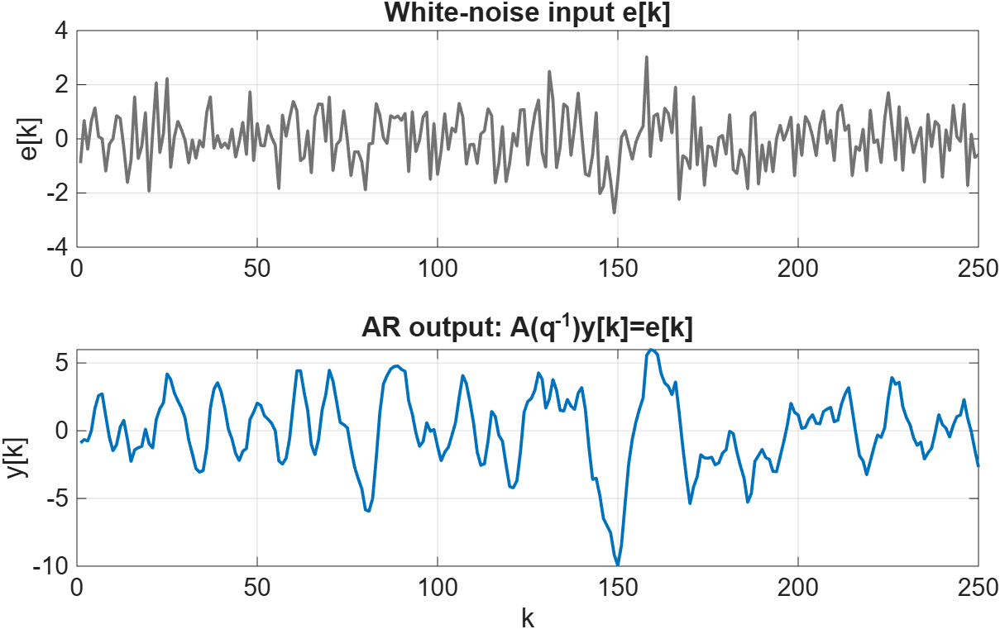
MA: Moving Average Model
In this case, we have $$ A(q^{-1})=1,\quad \frac{B(q^{-1})}{F(q^{-1})}=0,\quad D(q^{-1})=1 $$
MA: Moving Average Model
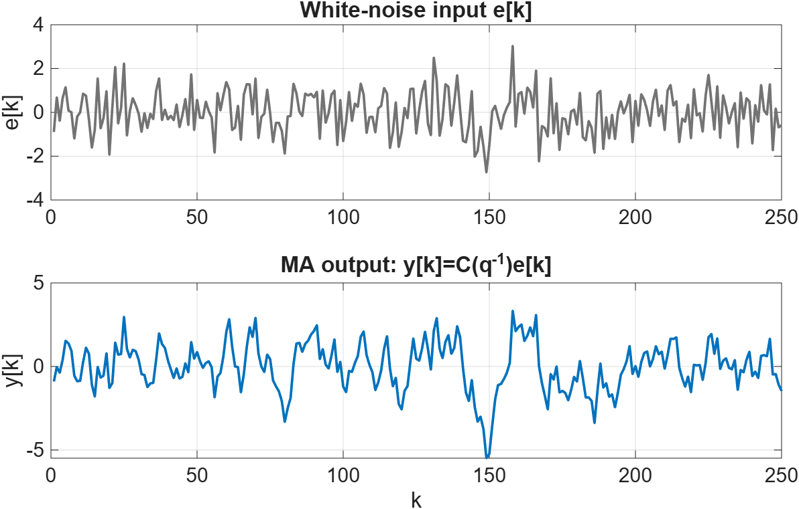
ARMA: Auto-Regressive Moving Average Model
In this case, we have $$ \frac{B(q^{-1})}{F(q^{-1})}=0,\quad D(q^{-1})=1 $$
ARMA: Auto-Regressive Moving Average Model
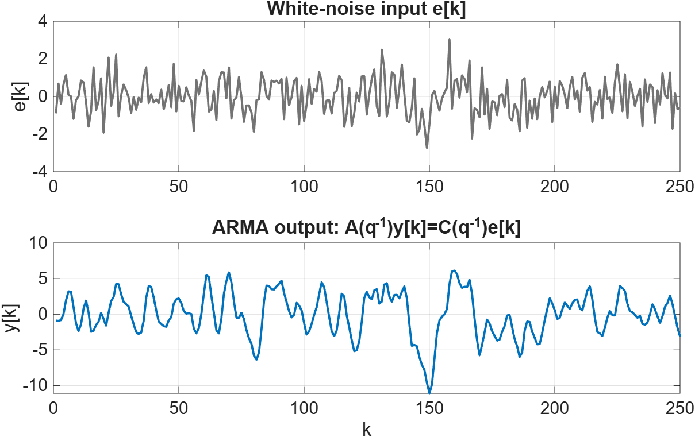
ARX: Auto-Regressive w/ eXogenous input Model
In this case, we have $$ F(q^{-1})=1,\quad \frac{C(q^{-1})}{D(q^{-1})}=1 $$
ARX: Auto-Regressive w/ eXogenous input Model
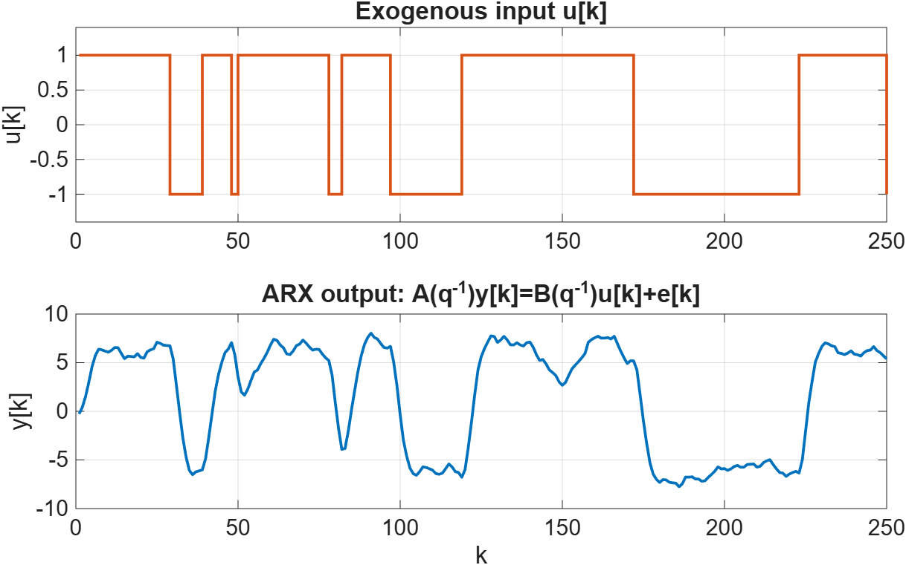
ARMAX: Auto-Regressive Moving Average w/ eXogenous input Model
In this case, we have $$ F(q^{-1})=1,\quad D(q^{-1})=1 $$
ARMAX: Auto-Regressive Moving Average w/ eXogenous input Model
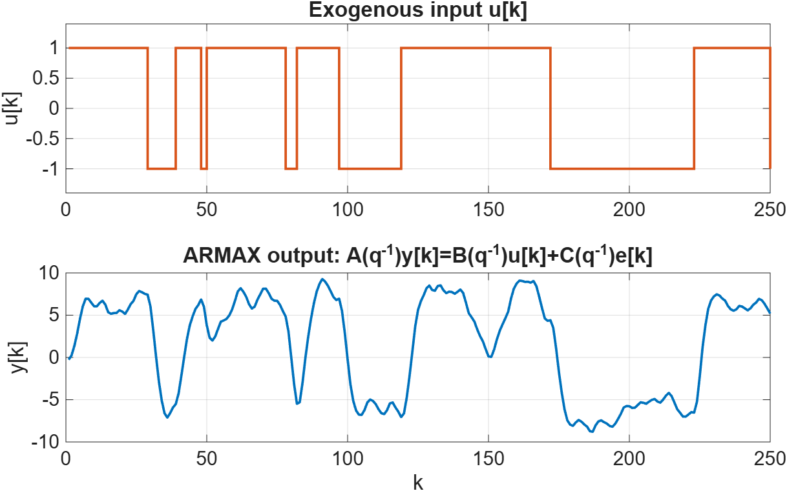
ARX vs ARMAX
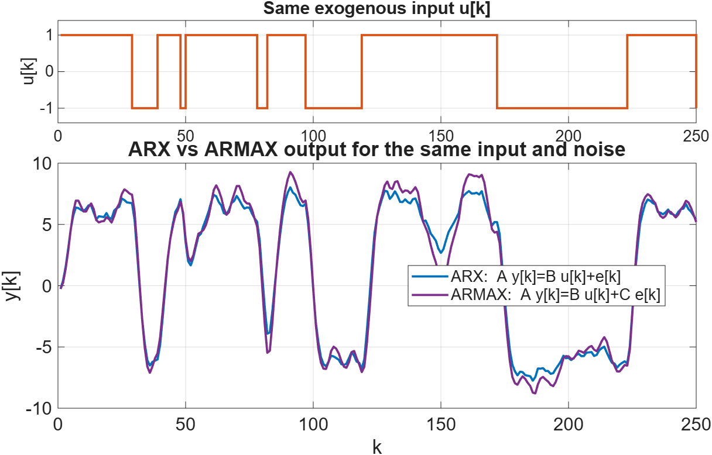
Box-Jenkins Model
In this case, we have $$ A(q^{-1})=1 $$
Box-Jenkins Model
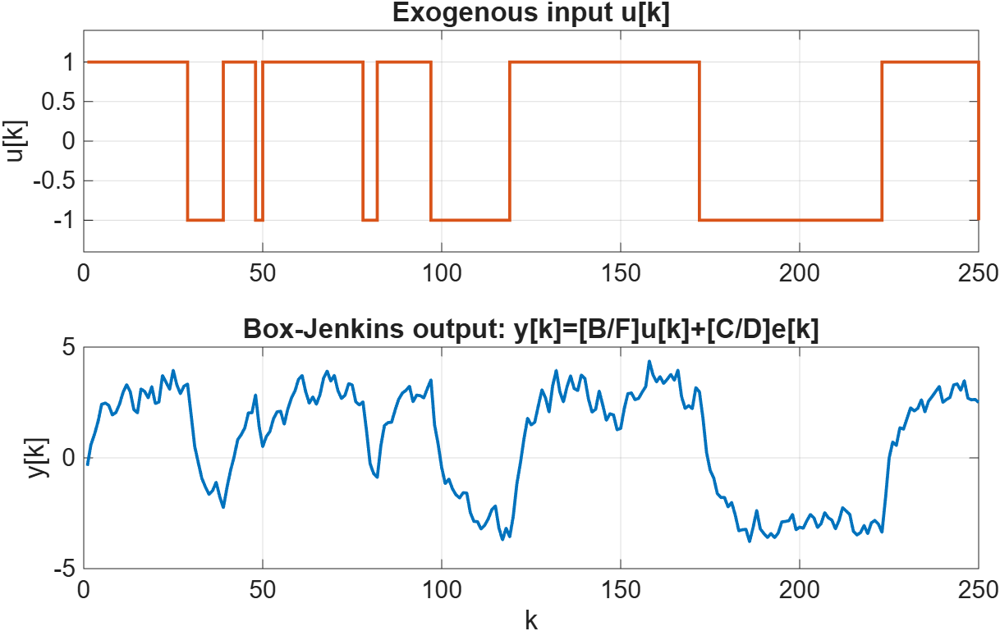
Output-Error Model (OEM)
In this case, we have $$ A(q^{-1})=1,\quad \frac{C(q^{-1})}{D(q^{-1})}=1 $$
Output-Error Model (OEM)
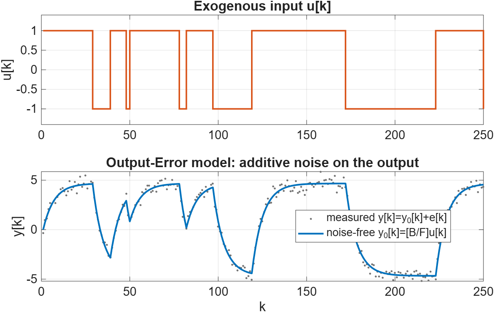
ARIMA: Auto-Regressive Integral Moving Average Model
ARIMA: Auto-Regressive Integral Moving Average Model
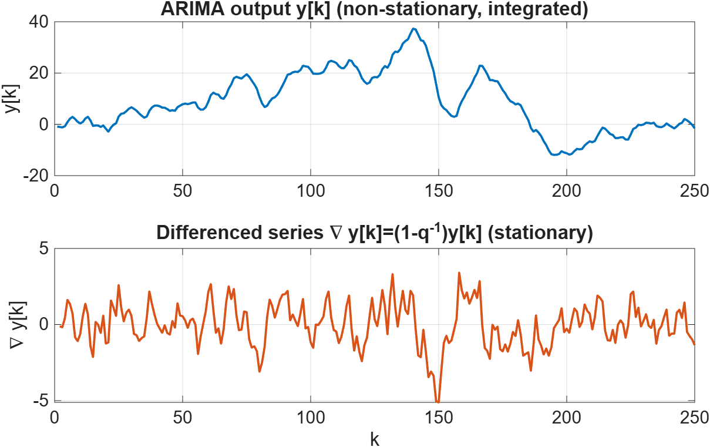
Parameter Estimation
Parameter Estimation
Parameter Estimation
Parameter Estimation
Parameter Estimation
Parameter Estimation
Parameter Estimation
Parameter Estimation
Parameter Estimation
$$ \hat{\theta}^{\text{ML}} =(\mathcal{H}^\trp \mathcal{R}^{-1}\mathcal{H})^{-1}\mathcal{H}^\trp \mathcal{R}^{-1}Y $$
Parameter Estimation
$$ \hat{\theta}^{\text{MAP}} =\hat{\theta}_0+(P_0^{-1}+\mathcal{H}^\trp \mathcal{R}^{-1}\mathcal{H})^{-1}\mathcal{H}^\trp \mathcal{R}^{-1}Y $$
Parameter Estimation
$$ \hat{\theta}^{\text{MMSE}} =\int \theta p(\theta |Y)d\theta $$
Usually solved using MCMCParameter Estimation
$$ Y=\mathcal{H}\theta +\mathcal{T}\varepsilon $$
Use ML, MAP, MMSE, etc to find the best $\theta$!Parameter Estimation
$$ Y=\mathcal{H}\theta +\mathcal{T}\varepsilon $$
Use ML, MAP, MMSE, etc to find the best $\theta$!Parameter Estimation
Parameter Estimation
Parameter Estimation
Radial Basis Function (RBF) Model
Radial Basis Function (RBF) Model
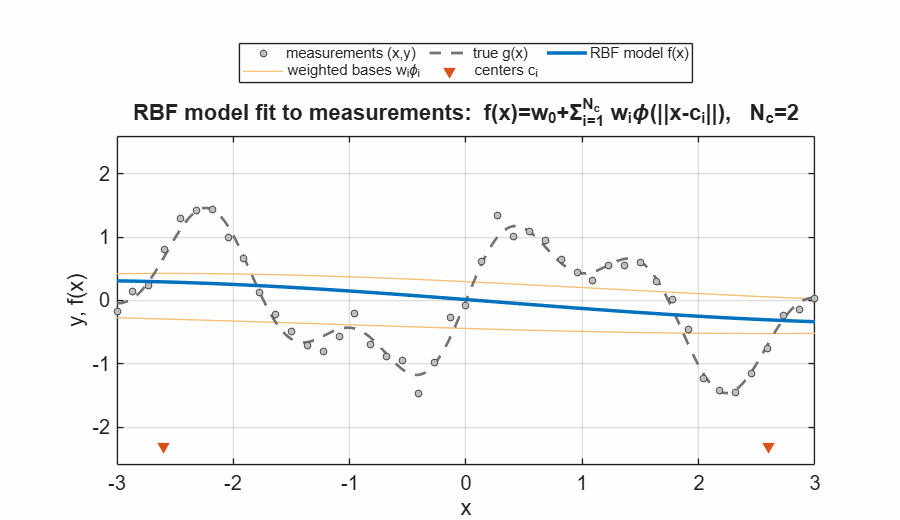
Online Parameter Estimation
$$ \mathcal{D}^N=\{(y_1,u_1),(y_2,u_2),\ldots,(y_N,u_N)\} $$
Using the ML estimator:$$ \hat{\theta}^{\text{ML}}_{N} =(\mathcal{H}_N^\trp \mathcal{R}_N^{-1}\mathcal{H}_N)^{-1}\mathcal{H}_N^\trp \mathcal{R}_N^{-1}Y_N $$
Online Parameter Estimation
$$ \mathcal{D}^N=\{(y_1,u_1),(y_2,u_2),\ldots,(y_N,u_N),(y_{N+1},u_{N+1})\} $$
Using the ML estimator:
$$ \hat{\theta}^{\text{ML}}_{N+1}=\hat{\theta}_N^{\text{ML}}+K_{N+1}(y_{N+1}-H_{N+1}\hat{\theta}^{\text{ML}}_N) $$
Online Parameter Estimation
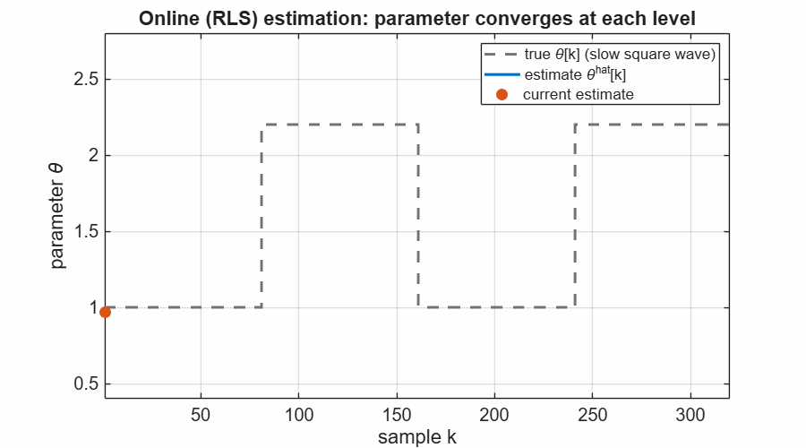
Online Parameter Estimation
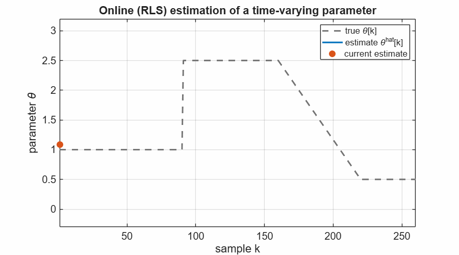
Online Parameter Estimation
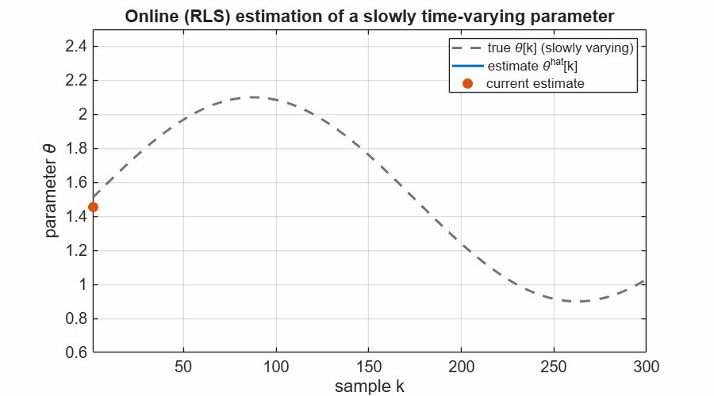
Neural Networks
A neural network approximates the nonlinear map from the regressor $\varphi[k]$ to the output $\hat{y}[k]$.
Neural Networks
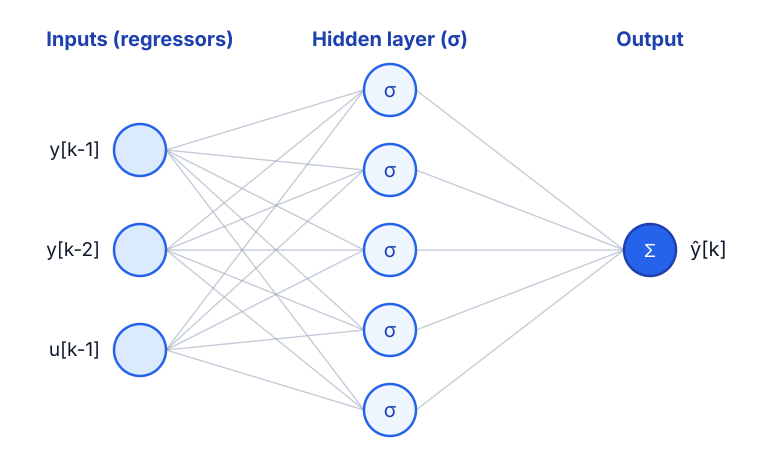
Neural Networks
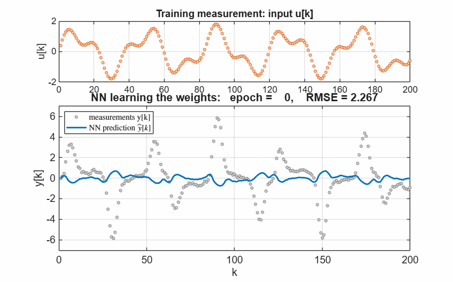
LASSO Estimation
The $\ell_1$ penalty drives some parameters exactly to zero $\Rightarrow$ a sparse model.
LASSO: Sparsity & Model Selection
- $L_2$ (ridge) shrinks all coefficients, but keeps them nonzero;
- $L_1$ (LASSO) sets irrelevant coefficients exactly to zero;
- zeroed coefficients remove their regressors $\Rightarrow$ automatic model selection;
- $\lambda$ tunes the sparsity: larger $\lambda \Rightarrow$ fewer active terms.
LASSO: L1 vs L2 Geometry
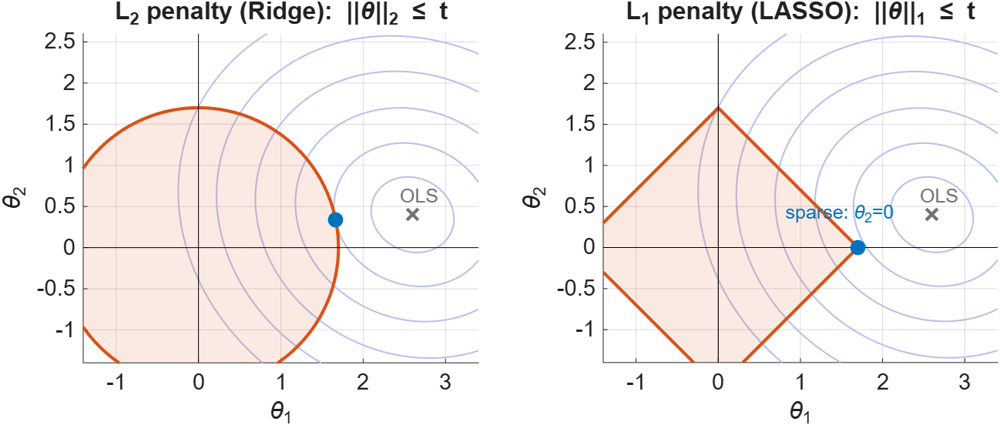
LASSO: Application Example
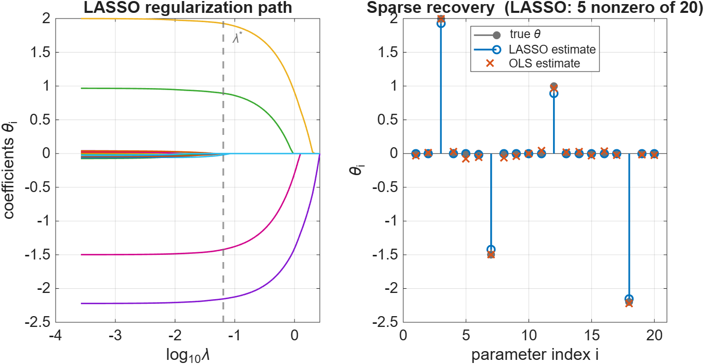